E04 - Simulación y Diseño Generativo
Diseño Generativo
El la función diseño generativo de Fusion 360 es un software para desarrollar productos que optimiza materiales y procesos de producción, cumpliendo con los requisitos de rendimiento estipulados en cuestion.
Los diseñadores e ingenieros que utilizan este enfoque pueden establecer una visión general de las diferentes soluciones potenciales de un problema de diseño específico, para luego elegir la opción que mejor se adapte a su proyecto.
Todo el proceso descrito ahorra tiempo, dinero y recursos, y hace de Fusion 360, una plataforma de desarrollo de productos que combina diseño, ingeniería y producción en un único paquete de software, y que Autodesk expuso en EMO Hannover 2019.
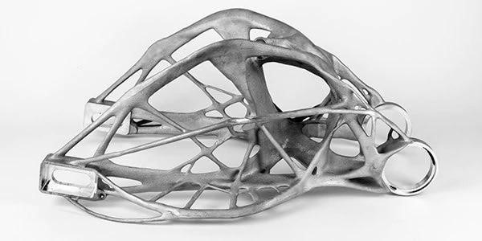
La versión eléctrica del transportador VW fue desarrollada con el software de diseño regenerativo Fusion 360, de Autodesk. Por ello, los diseñadores fueron capaces de reducir la cantidad de materiales utilizados, logrando un ahorro significativo de peso.
Simulación
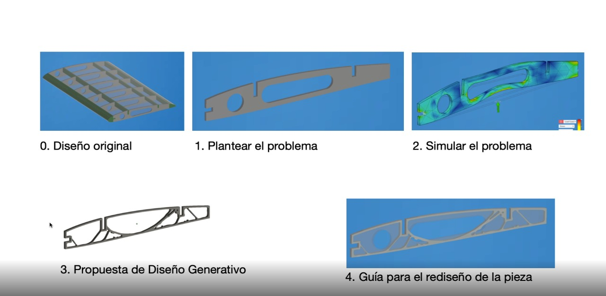
Plantear el problema
-
Se define el material
-
Luego se deben definir las restricciones. Para esto se eligen las caras que van fijas a la piezas, y por ende que no se deben modificar con mayor detalle.
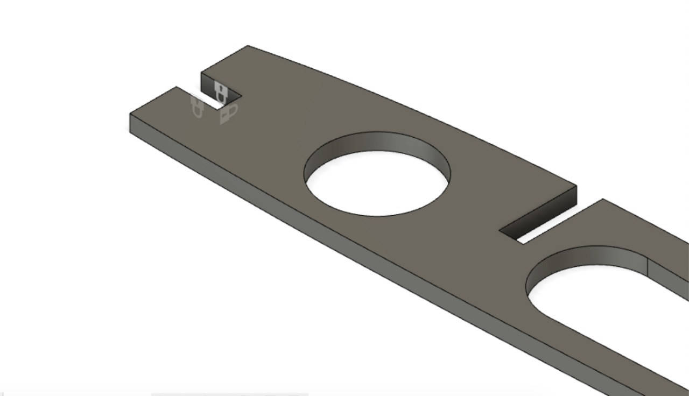
- Luego se debe definir el vertor de carga. Para el cual se sebe poner una carga de 1000N (lo que es equivante a soportar 100kg)
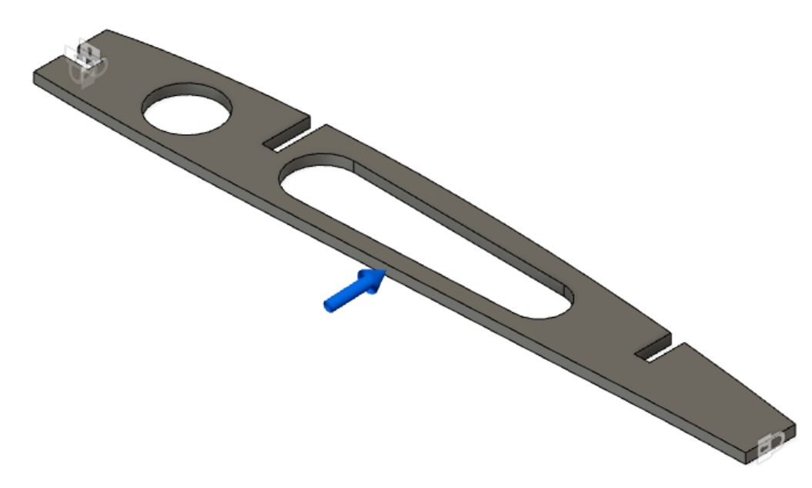
Simular el probelma
- En este punto se puede apreciar como las cargar afectan a la pieza. Señalando con colores a las areas que sufren mayor estres con el peso.
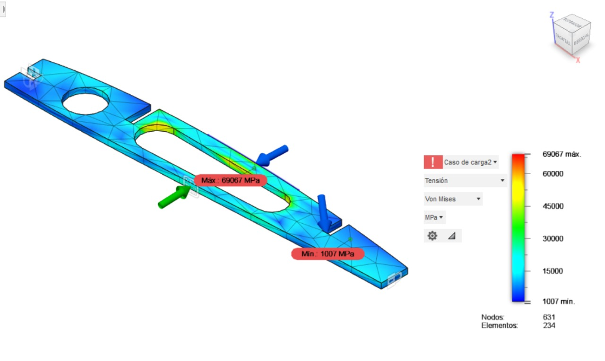
Iframe de Fusion 360
Diseño Generativo
- Elegir dentro de la ventana de Diseño Generativo de Fusion 360, panel de datos, se debe escoger a GE Bracket
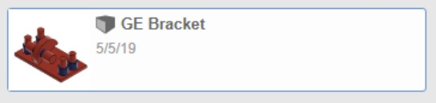
-
Paso a paso, se debe seguir el orden de izquierda a derecha, comenzando por los espacios de diseño. 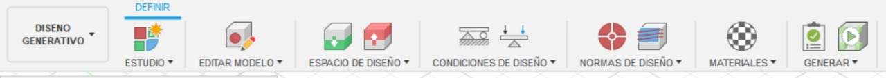
-
En el tercer paso, se deben selecionar los de espacios de diseño. Comenzando con “conservar geometria” (verde) y luego la “geometria de obstaculos” (rojo)
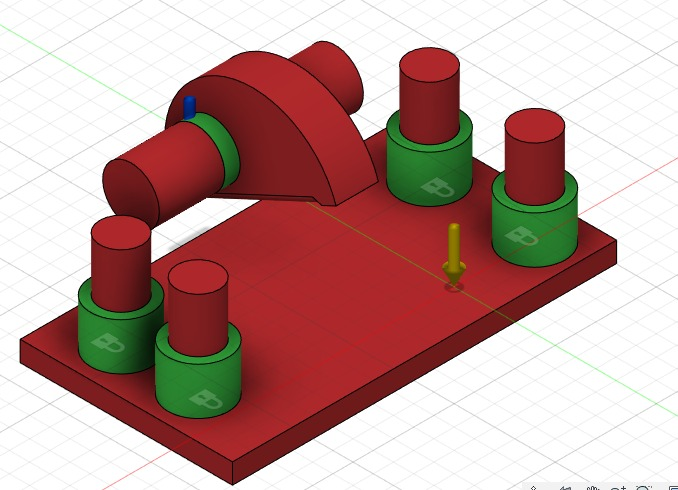
- Condiciones de diseño, se sebe elegir en primer lugar la parte que ira fija hacia abajo o la base “restricciones estructurales”. Para luego con el comando de cargas estrurales se ubica donde va el rodamiento. Con una resitencia hasta de 1000N. (Se debe poner -1000 por la orientacion del vector)
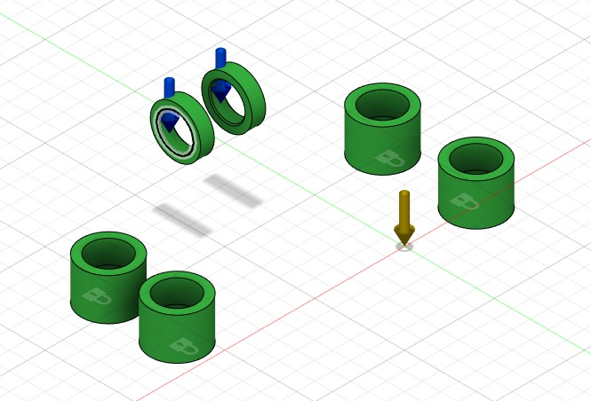
- Luego se deben elegir las normas de diseño. Primero los “objetivos y limites”, en donde se busca minimizar la masa con un coeficiente de seguridad de 2.00
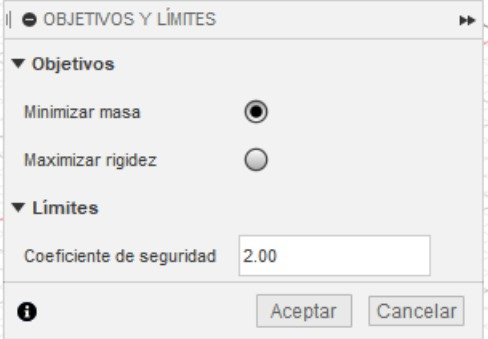
- Finalmente faltan por elegir los materiales. Para los cuales se eligieron 4: aluminio, titanio, plastico y inconel
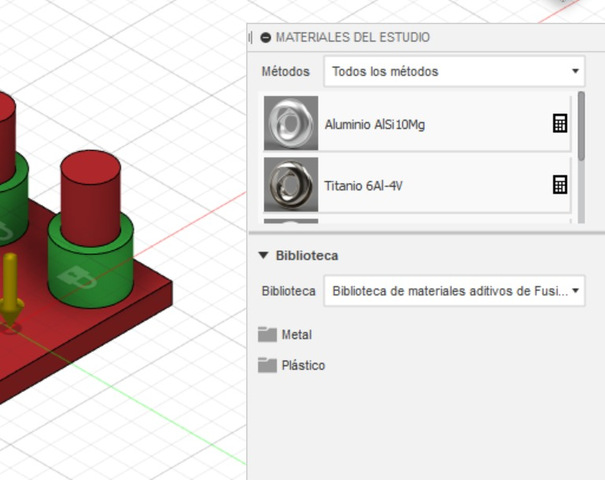
-
Solo queda hacer el Pre-Check para ver si el proceso se hizo de manera correcta.
-
Por ultimo se puede visualizar una vista preliminar del resultado
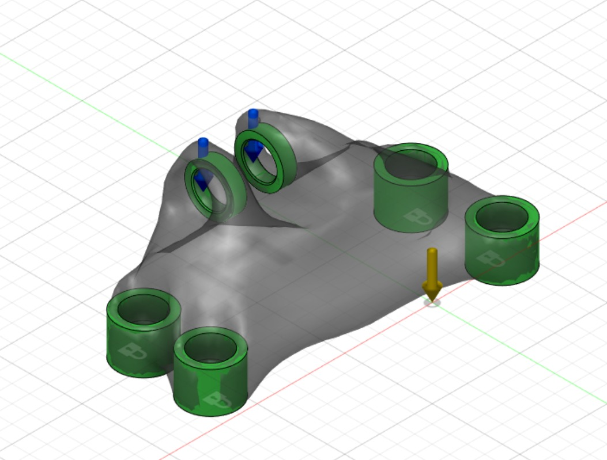
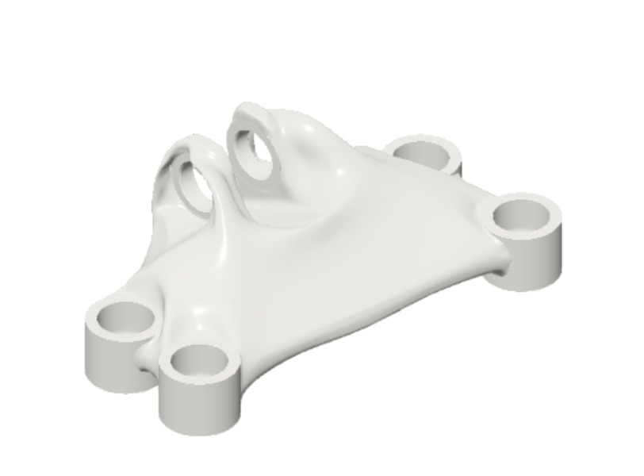
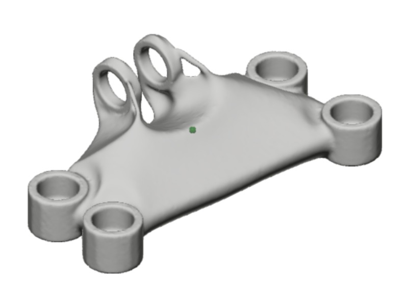
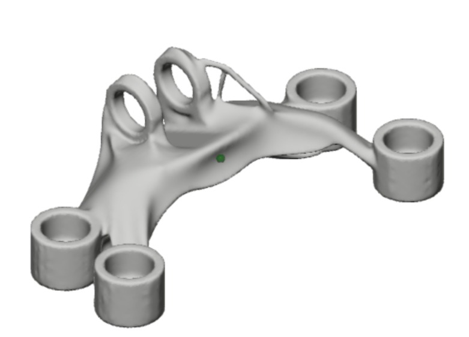